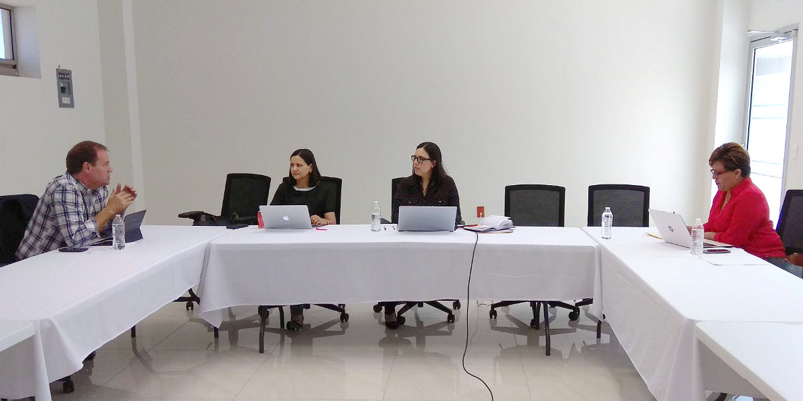
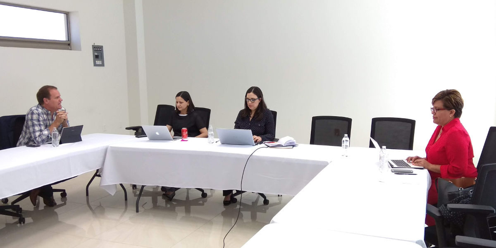

Comisión Ejecutiva del Sistema Anticorrupción del Estado de Coahuila de Zaragoza
La tercera sesión ordinaria 2018, de la Comisión Ejecutiva, se llevó a cabo el 17 de julio de 2018 en las instalaciones de la Secretaría Ejecutiva del Sistema Anticorrupción del Estado de Coahuila.
A esta reunión asistieron los Consejeros, Lourdes de Koster López, Juan Adolfo Von Bertrab y Ana Yuri Solís, así como la Secretaría Técnica de la Secretaría Ejecutiva, Marcela Castañeda.
El Objetivo de la reunión, fue revisar y aprobar el avance realizado en cada uno de los temas del Programa de Trabajo de la Comisión Ejecutiva, así como, dar a conocer, por parte de la Secretaria Técnica, la propuesta de lineamientos de la CE para su revisión y análisis.
Lourdes de Koster, destacó las acciones que se han realizado para concretar el proyecto de Programa de Radio del Consejo de Participación Ciudadana "Hablemos de Corrupción", además, presentó una agenda de vinculación con los sectores de la sociedad civil y empresarial, para dar difusión a las acciones del Sistema Anticorrupción del Estado de Coahuila.
El consejero Adolfo Von Bertrab comentó sobre la estrategia que se desarrolla dentro del CPC para acrecentar el vínculo del Sistema Estatal con los municipios.
Ana Yuri Solís, mostró el avance de los temas de diagnóstico, sistematización de la información estadística y de la plataforma estatal, en la matriz de objetivos y acciones. Dichas acciones llevan un avance promedio del 70 por ciento a lo programado para el 2018.
La Secretaria Técnica, por su parte, comentó sobre el avance de la coordinación de acciones de los integrantes del Sistema Anticorrupción, además de presentar los formatos establecidos para la integración del informe anual del Comité Coordinador.
En otro punto, Marcela Castañeda presentó la propuesta de lineamientos de la Comisión Ejecutiva para la reflexión y análisis del resto de los integrantes.

